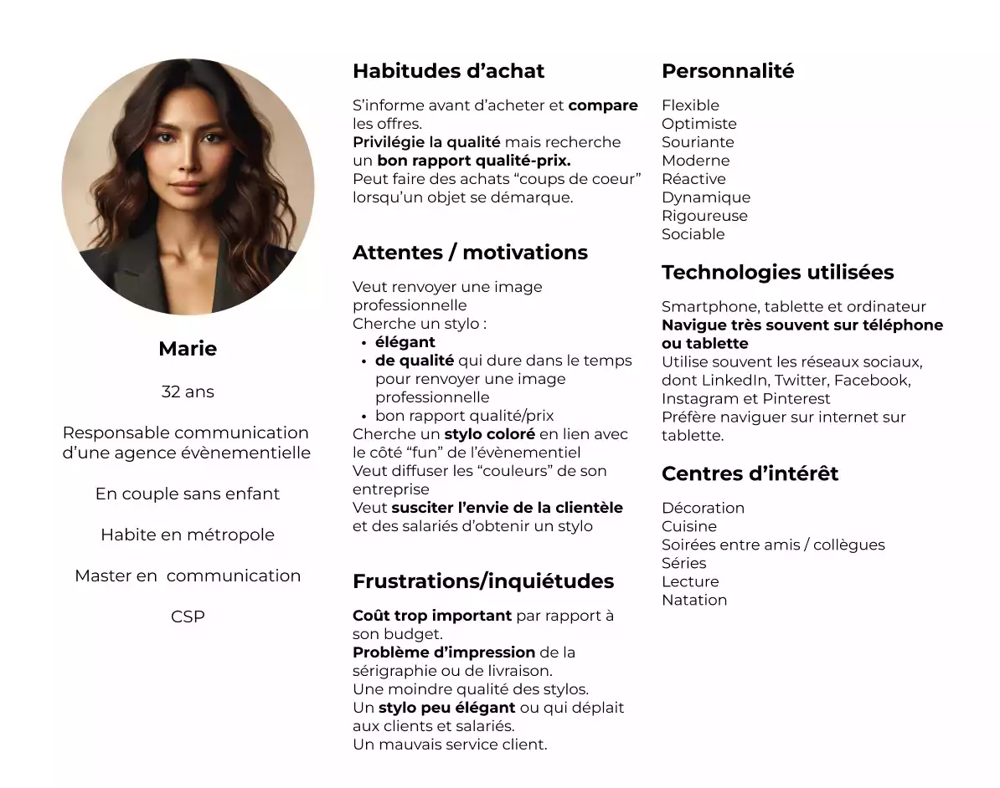

Landing page
Contexte


Lien vers le site :
Landing page Goodis
L'entreprise Good'is, spécialiée dans la vente d'objets publicitaires depuis plus de 20 ans, souhaite qu'une landing page soit réalisée afin de promouvoir un nouveau stylo publicitaire.
Processus
- Identification des contenus à intégrer à la landing page
- Rédaction d'un persona
- Choix de la charte graphique
- Réalisation des maquettes mobile et ordinateur
- Intégration des maquettes
Identification des contenus et rédaction d'un persona
L'analyse d'une quinzaine de pages d'atterrissage a permis de mettre en évidence les contenus à intégrer :
- une accroche
- une photographie du stylo
- des call-to-action
- les caractéristiques techniques du stylo et son prix
- des commentaires laissés par les précédents clients de Good'is
Un persona a également été rédigé afin de mieux appréhender les attentes et les peurs éventuelles d'un client potentiel du nouveau stylo proposé par l'entreprise Good'is.
Création de la charte graphique
La charte graphique est composée d'une large palette de couleurs car l'entreprise Good'is, spécialisée dans la vente d'objets publicitaires, a l'ambition de proposer à sa clientèle la diffusion de "leurs propres couleurs".
Maquettage sous figma
Les maquettes ont été réalisées pour les supports suivants :
- ordinateur de résolution 1440 x 1024,
- mobile de résolution 375 x 667.
La landing page, grâce à son responsive design, pourra être consultée sur un ordinateur, une tablette et un mobile. Accessible pour un plus grand nombre de clients potentiels, cela devrait impacter favorablement le taux de conversion.
Vous trouverez ci-dessous les visuels des deux maquettes, sur un format ordinateur et sur un format téléphone.
Les maquettes sont consultables en cliquant ici.